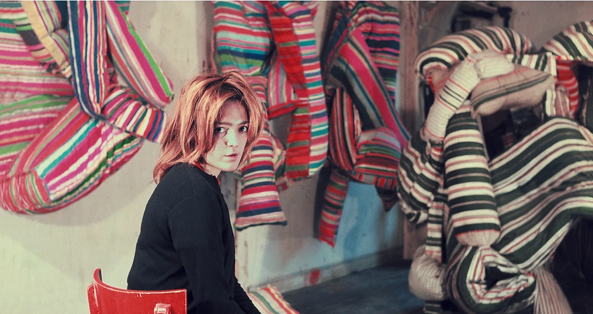
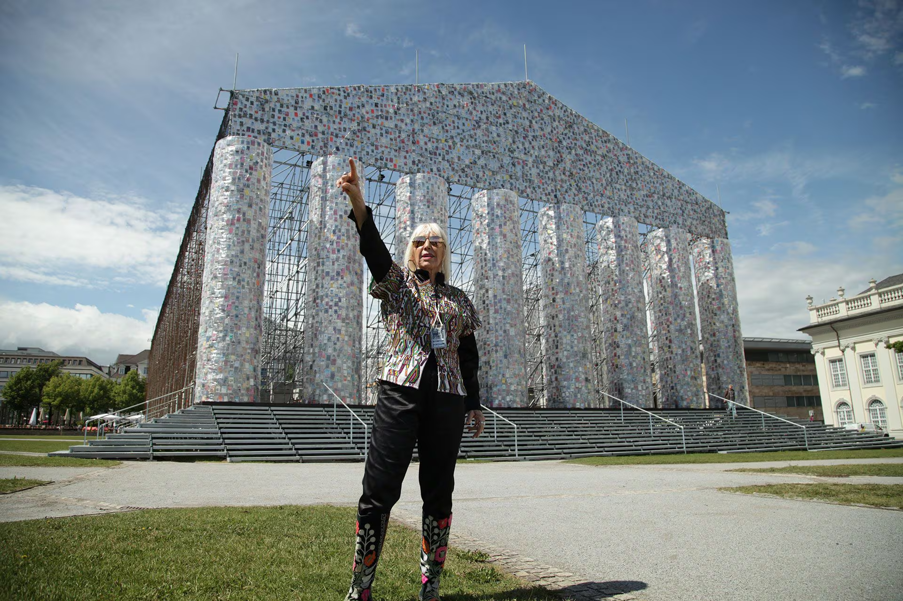
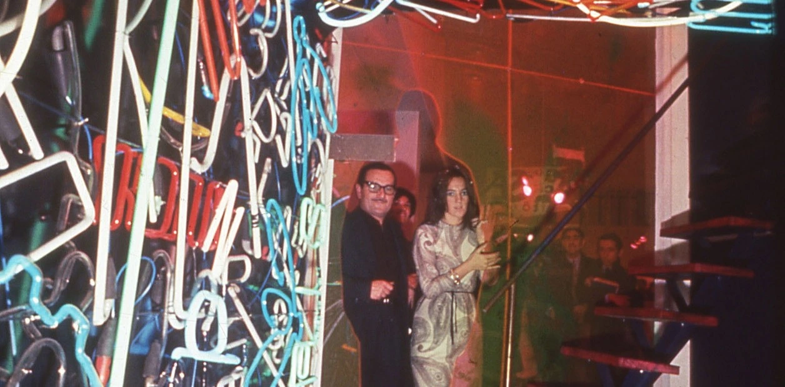
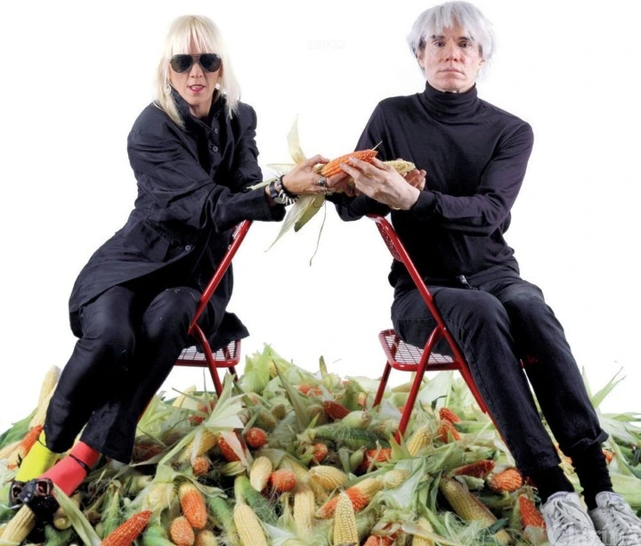

01 / ACCIONES
AÑOS 60

Acciones en vivo
Los happenings del Instituto Di Tella y el archivo que dejaron: qué pasó en el momento y qué queda hoy.

Desde los happenings en el Instituto Di Tella hasta las esculturas participativas monumentales, la obra de Marta Minujín transforma al espectador en protagonista absoluto.
Conocer su historia →“Frase pendiente”

Los happenings del Instituto Di Tella y el archivo que dejaron: qué pasó en el momento y qué queda hoy.

Libros, pan dulce y deuda externa: cómo Minujín convierte objetos cotidianos en obras y cuestiona el mercado.
Una línea de tiempo con el estado de cada obra y el reconocimiento que recibió la artista a lo largo de los años.

Una acción simbólica junto a Andy Warhol en The Factory: Minujín entregó choclos —el "oro latinoamericano"— para saldar metafóricamente la deuda externa argentina, cuestionando el poder económico a través del arte pop.
Leer sobre pop y mercancía →